Sagrada Familia
Sagrada Familia, a UNESCO World Heritage site and Antoni Gaudi’s magnum opus, is the most iconic structure in Barcelona (and the most popular, with nearly 3 million visitors per year). Construction has been ongoing for more than 130 years, and the surreal structure, with its rainbow-hued stained glass windows, is slated for completion in 2026. Even in its unfinished state, it remains an absolute must-see for every visitor to the Catalan capital.

Park Güell
Antoni Gaudí spent 15 years designing and building the whimsical fountains, mosaic benches, pedestrian walkways, and gingerbread house-like buildings within Park Güell, one of the seven Works of Antoni Gaudí locations that together make up a UNESCO World Heritage site. Along with the Sagrada Familia, the hilltop public park sits at the top of Barcelona’s must-see list, and for good reason. The art nouveau wonderland adorns many a postcard of the city.
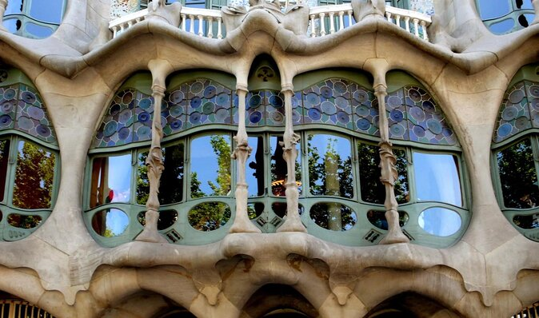
Casa Batlló
One of Barcelona’s most fanciful buildings, the elaborate Casa Batlló was built by celebrated Catalan architect Antoni Gaudí and is nicknamed the “House of Bones” for its contorted window frames and skeletal pillars. Casa Batlló’s interior is equally mind-boggling, featuring rippled walls, exquisite tile work, and sculpted fireplaces.

Gothic Quarter (Barri Gotic)
Barcelona's Gothic Quarter (Barri Gotic) dates back to the Middle Ages, and the neighborhood’s age is evident in its narrow winding roads, shaded plazas, and beautiful architecture.

Milà House (Casa Milà)
One of Antoni Gaudí’s most intriguing creations, the spectacular Casa Milà—also known as La Pedrera (The Quarry) because of its wave-like stone exterior—caused some controversy among critics when it was first unveiled back in 1910. Today, however, it's considered a masterpiece of Catalan Modernisme, with gaggles of visitors coming to see its surreal sculptural roof terrace, the re-created early 20th-century interiors, and the attic-level Espai Gaudí exhibit, which is devoted to the great Catalan architect’s work.
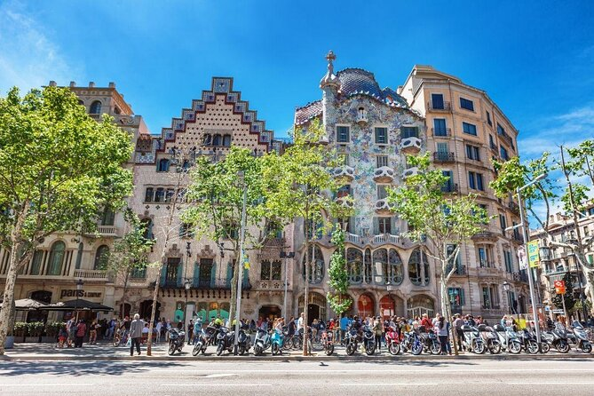
Passeig de Gracia
Passeig de Gràcia is one of the most beautiful—and expensive—avenues that runs through the center of Barcelona. The thoroughfare links the Placa Catalunya in the Eixample district to the eponymous Gracia neighborhood, and is home to a number of fantastic modernista and art nouveau buildings, including some stunners by Antoni Gaudí.
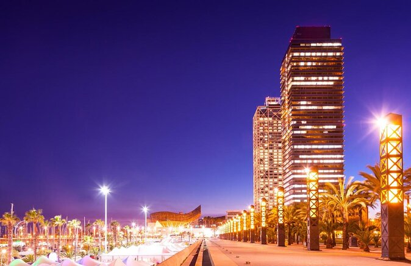
Port Olímpic
Flanked by the Torre Mapfre and Hotel Arts skyscrapers, the Port Olímpic was built as part of the area’s redevelopment in preparation for the 1992 Olympics. With its proximity to the beach and its iconic public art (including Frank Gehry’s Peix), it has become one of the most popular leisure areas in the city and a busy marina.
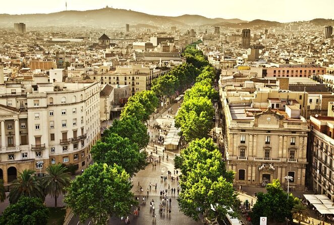
Las Ramblas
Barcelona's most famous street, Las Ramblas runs from the Columbus Monument in Port Vell to Plaça de Catalunya. To walk its tree-shaded pedestrian expanse is to be inundated with sensation: souvenir hawkers selling beach blankets and trinkets, street performers posing for selfies with tourists, florists displaying their arrangements, restaurants serving tapas and paella at alfresco tables, and artists painting caricatures for passersby. It's a microcosm of Barcelona, and it's almost always busy, day or night.
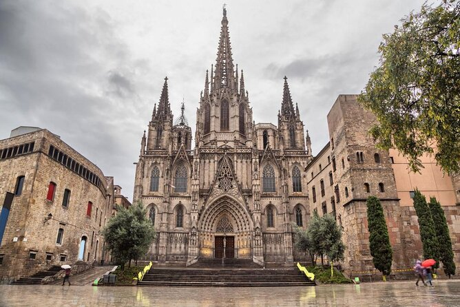
Barcelona Cathedral (Catedral de Barcelona)
Standing tall over a medieval square in the center of the Gothic Quarter, the Barcelona Cathedral (Catedral de Barcelona) is the seat of the Archbishop of Spain and a major landmark of the city. The cathedral is known for its 14th-century cloister full of palm trees and a Gothic portico where 13 geese wander.
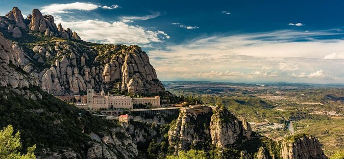
Montserrat Mountain
Located about 30 miles (50 km) northwest of Barcelona is Montserrat Mountain, the 'Serrated Mountain.' This unique rock formation, sawed and sculpted by thousands of years of wind and rain, is most famously home to a Benedictine monastery, an important Catholic pilgrimage spot thanks to its 12th-century wooden statue of La Moreneta (The Black Madonna), Catalonia's patron saint. Aside from its religious and cultural importance, the mountain also boasts unbeatable views from its peaks.
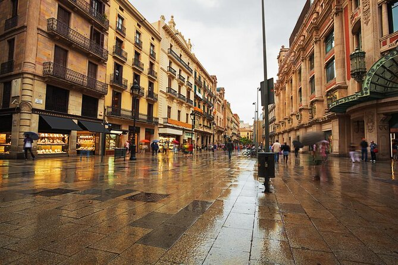
El Born
One of the oldest neighborhoods in Barcelona is also one of the trendiest. El Born features character-rich streets lined with tapas bars, quaint bistros, and artsy clubs that give this area a bohemian vibe. Its proximity to many of Barcelona’s top attractions, such as Las Ramblas and the Gothic Quarter, make El Born an ideal place to stay.
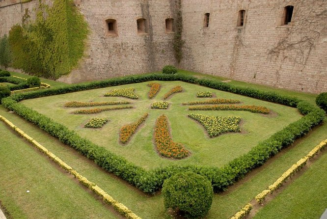
Montjuïc Castle (Castell de Montjuïc)
Looming dramatically over the Barcelona skyline, Montjuïc Castle (Castell de Montjuïc) is a 17th-century military fortress perched atop Montjuïc Mountain. After a tumultuous history, including various wars, the site now functions as a municipal facility and hosts cultural events—and offers great views of the city and beyond.
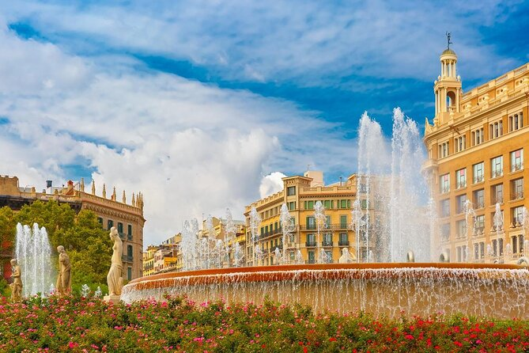
Catalunya Square (Plaça de Catalunya)
Old and new Barcelona meet in Catalunya Square (Plaça de Catalunya), the famous plaza in the heart of the city. Two massive avenues, La Rambla and Passeig de Gracia, converge here too, as do many walking tours and other groups. The square is located near some of Barcelona’s top attractions and is filled with cafés, bars, and restaurants.

Ciutadella Park (Parc de la Ciutadella)
Barcelona’s oldest and most popular park, Ciutadella Park (Parc de la Ciutadella), is a picturesque expanse of greenery with several attractions. Its landmark Arc de Triomf, designed by Josep Vilaseca i Casanovas, serves as the monumental gateway to the northern entrance of the park, which is also home to a boating lake, the Barcelona Zoo, Catalan Parliament, two museums, and a much-celebrated series of sculptures.
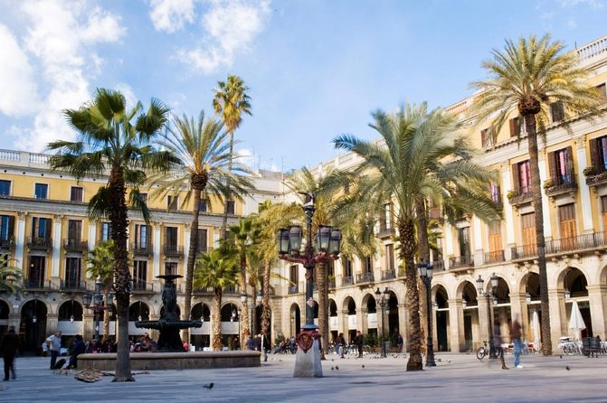
Placa del Rei
The heart of Barcelona’s Old Town, Plaça del Rei is the city’s best preserved medieval square. The 14th-century Palau Reial Major (Royal Mayor Palace), which dominates the square was home to the counts of Barcelona and the Kings of Aragon. The Plaça is now an unofficial open-air museum of fine gothic architecture.
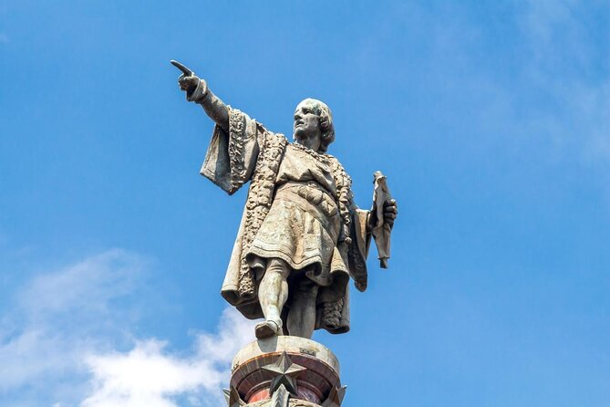
Columbus Monument (Mirador de Colom)
Standing at around 197 feet (60 meters) on the southern end of La Rambla, Barcelona's Columbus Monument (Mirador de Colom) offers some of the city's best views. The monument was the first place in the city to have an elevator (of the hydraulic variety); today, a modern lift shuttles visitors up to the viewing platform.
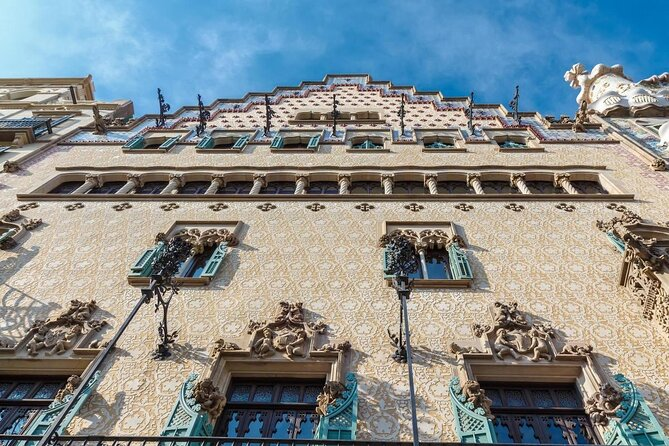
Casa Amatller
This 19th-century structure, built by Josep Puig i Cadafalch for renowned chocolatier Antoni Amatller, is a stunning modernist building featuring both Flemish and Catalan styles. The building is now a museum featuring period furniture and decorations as well as old photographs and other artifacts.